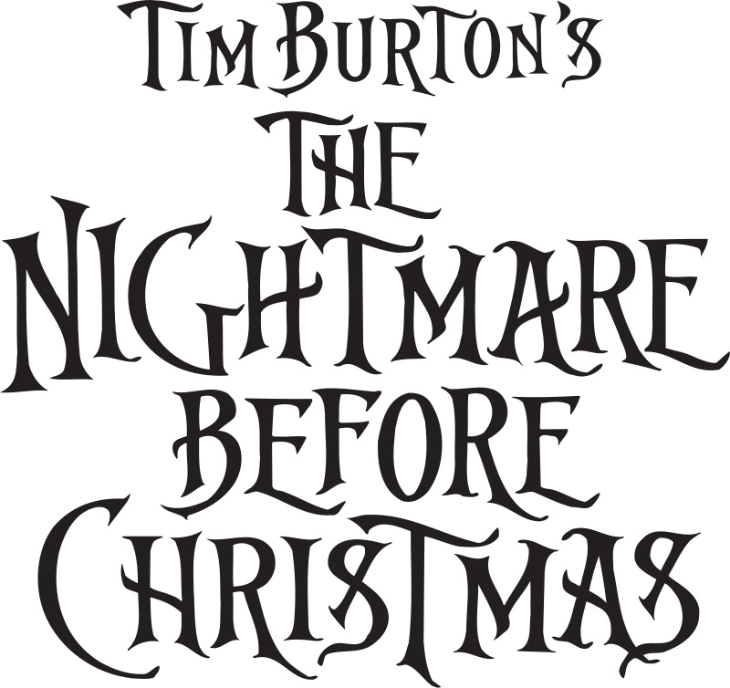

The Nightmare Before Christmas

(conocida en Hispanoamérica como El extraño mundo de Jack y en España como Pesadilla antes de Navidad) es una película estadounidense de fantasía musical animada en stop-motion de 1993, dirigida por Henry Selick en su debut como director de largometrajes y producida e ideada por Tim Burton. Cuenta la historia de Jack Skellington, el rey de «Halloween Town», que se topa con Ciudad Christmas y planea apoderarse de la fiesta. Danny Elfman compuso las canciones y la partitura y puso la voz de Jack. El reparto principal de voces incluye a Chris Sarandon, Catherine O'Hara, William Hickey, Ken Page, Paul Reubens, Glenn Shadix y Ed Ivory.
Més informació aquí